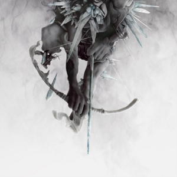

Un viaje al corazón del nu metal: Linkin Park

Discografía

Hybrid Theory
Fecha de lanzamiento: 24/10/2000
Discográfica: Warner Bros

Meteora
Fecha de lanzamiento: 25/03/2003
Discográfica: Warner Bros

Minutes to Midnight
Fecha de lanzamiento: 15/05/2007
Discográfica: Warner Bros - Machine Shop

A Thousand Suns
Fecha de lanzamiento: 14/09/2010
Discográfica: Warner Bros - Machine Shop

Living Things
Fecha de lanzamiento: 26/06/2012
Discográfica: Warner Bros - Machine Shop

The Hunting Party
Fecha de lanzamiento: 17/06/2014
Discográfica: Warner Bros - Machine Shop

One More Light
Fecha de lanzamiento: 19/05/2017
Discográfica: Warner Bros - Machine Shop